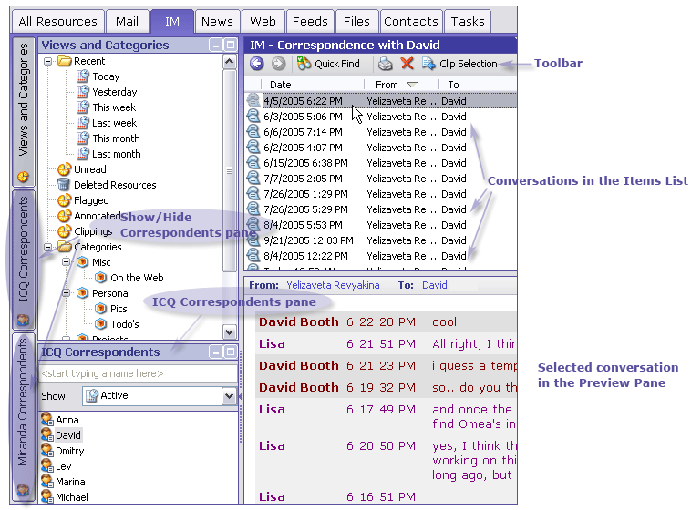

Instant Messaging
Omea Pro provides functionality to view, manage and organize ICQ and Miranda instant message conversations to find any necessary info in these conversations.
Conversation is a dialog with any IM correspondent where the messages are sent within the time period specified in the Options -> Instant Messaging: ICQ or Miranda. By default, this time period is 60 minutes.
Once you have selected to synchronize your IM conversations when coming through Omea Pro's Startup Wizard, the incoming and outgoing IM messages are immediately added to Omea Pro or synchronized with Omea Pro. To switch this synchronization off, unselect the Synchronize database immediately in the Options -> Instant Messaging: ICQ or Miranda dialog.
Viewing Instant Message Conversations
To view instant messages, open the IM tab. The Conversation list occupies the upper-right part of the tab. It shows message threads, i.e. messages from different correspondents or from one correspondent but in different time periods.
Depending on what you have selected in the View>Preview Pane, the Conversation viewer pane is located in the lower or right part of the window showing all the messages within the thread selected in the Conversation list.
The Conversation list has several columns (From, To, Subject, Date, Flags, Annotations) depending on the columns you have selected in Configure Columns dialog. Clicking the column title sorts the messages according to the selected column.
The top of the IM tab has a toolbar with the following buttons: Quick Find, Print and Create Clipping from Selection.

Viewing instant messages can be filtered in several ways:
Using Views and Categories Pane
You can view instant messages pressing desired folder of the Views and Categories pane. If this pane is not visible, open the IM tab and click the Views and Categories button on the pane selector bar (left-hand side of the main window). For instance, to see all messages in this month, click the This month folder.
Using IM Correspondents Pane
Using ICQ Correspondents pane you can browse through messages from/to the particular ICQ correspondent. If this pane is not visible, open the IM tab and click the ICQ Correspondents button on the pane selector bar (left-hand side of the main window) or press Ctrl+Alt+Q or from the View menu, select Panes>ICQ Correspondents.
The pane contains the list of all correspondents that you have sent messages to or received messages from. You can filter them using the Show drop-down list. The choices are: All, Active, IM Contacts and available Outlook address books.
Using Miranda Correspondents Pane
Using ICQ Correspondents pane you can look at messages from/to the particular Miranda correspondent. If this pane is not visible, open the IM tab and click the Miranda Correspondents button on the pane selector bar (left-hand side of the main window) or just press Ctrl+Alt+M or from the View menu, select Panes>Miranda Correspondents.
Using Quick Find
Another way to find a correspondent is to use Quick Find. Press on the IM tab toolbar, then type the name of the desired correspondent. As you type, the list of correspondents is filtered according to the characters you enter. The more symbols are entered, the fewer the number of matched correspondents which is displayed in the Items List.
Searching Instant Messages
To find necessary messages, topics, you can use multiple Omea Pro's search possibilities.
E-mailing IM Conversations
You can share the e-mail conversations with other people.
To send IM conversation by e-mail:
- Select a message or message thread in the IM tab and right-click it and select Send by E-mail.
The new mail window appears with the mail body containing entire conversation in html. - Fill in other fields of your e-mail message and click Send.
Saving IM Conversations to File
You can save them as files in HTML format if necessary.
To save a conversation to file:
- Select a conversation or messages in the IM tab and right-click it and select Save to File.
- In the Save IM Conversation dialog, select location to store the conversation, type the conversation name and click Save.
To view the saved conversation, launch your favorite web browser, from the File menu, select Open File and navigate to the saved file and click Open or locate the saved conversation on your hard drive and double-click it.
To save several IM conversations is one HTML file, select them in the Items List by pressing and holding down either Ctrl or Shift and then repeat the procedure described above. The conversations will be saved on a single HTML-page and separated with a whitespace.